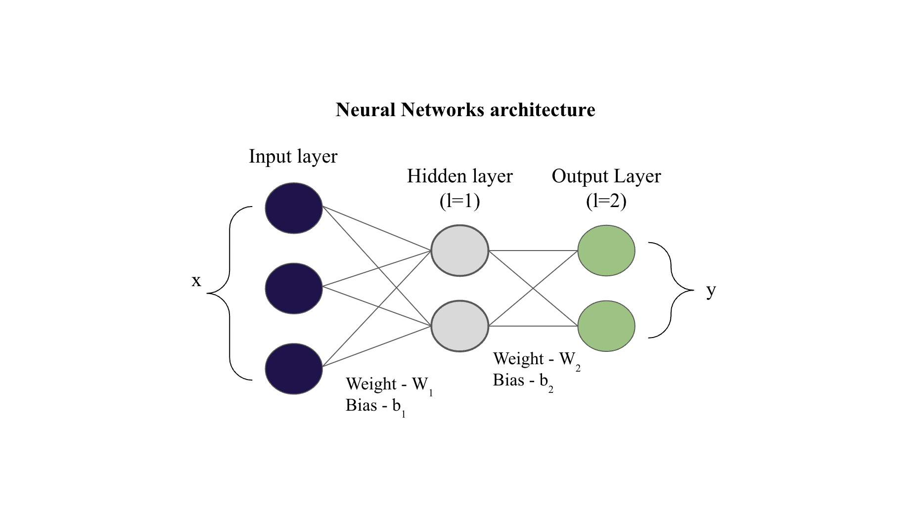

2.12. Numerical example Forward and Back pass
2.12. Numerical example Forward and Back pass#
Here we present Numerical example (with code) - Forward pass and Backpropagation (step by step vectorized form)
Note:
The equations (in vectorized form) for forward propagation can be found here (link to previous chapter)
The equations (in vectorized form) for back propagation can be found here (link to previous chapter)
Consider the network shown

Given values
Input \(x = [1, 4, 5]\), \(y = [0.1, 0.05]\)
The activation functions \(f_1(z)\) and \(f_2(z)\) (link to previous chapter) used here is sigmoid (for both the layers) and the cost function \(J(W, b)\) (link to previous chapter) is MSE.
Note: \(\odot\) means element wise multiplication (also called Hadamard product)
Let us write the code simultaneously
import numpy as np
def sigmoid(x):
'''
Parameters
x: input matrix of shape (m, d)
where 'm' is the number of samples (in case of batch gradient descent of size m)
and 'd' is the number of features
'''
return 1/(1+np.exp(-x))
def d_sigmoid(x):
# sigmoid derivative
return sigmoid(x) * (1-sigmoid(x))
def d_mse(a, y):
'''
dJ/daL
'''
return a - y
x = np.array([[1, 4, 5]])
y = np.array([[0.1, 0.05]])
W1 = np.array([[0.1, 0.2],
[0.3, 0.4],
[0.5, 0.6]])
b1 = np.array([[0.5],
[0.5]])
W2 = np.array([[0.7, 0.8],
[0.9, 0.1]])
b2 = np.array([[0.5],
[0.5]])
print("Forward and Backpropagation - Numerical example")
print("\nx =", x)
print("\ny =", y)
print("\nW1 =\n\n", W1)
print("\nb1 =\n\n", b1)
print("\nW2 =\n\n", W2)
print("\nb2 =\n\n", b2)
Forward and Backpropagation - Numerical example
x = [[1 4 5]]
y = [[0.1 0.05]]
W1 =
[[0.1 0.2]
[0.3 0.4]
[0.5 0.6]]
b1 =
[[0.5]
[0.5]]
W2 =
[[0.7 0.8]
[0.9 0.1]]
b2 =
[[0.5]
[0.5]]
Fowrard Propagation
For input layer (\(l=0\)),
For hidden layer (\(l=1\))
Now,
Let us code the same
z0 = a0 = x.copy()
z1 = a0 @ W1 + b1.T
a1 = sigmoid(z1)
print("z1 =", z1)
print("\na1 =", a1)
z1 = [[4.3 5.3]]
a1 = [[0.98661308 0.9950332 ]]
Now for the output layer (\(l=2\)),
Now,
z2 = a1 @ W2 + b2.T
a2 = sigmoid(z2)
print("z2 =", z2)
print("\na2 =", a2)
z2 = [[2.08615904 1.38879379]]
a2 = [[0.88955061 0.80039961]]
Backpropagation
Output layer Backpropagation error (\(\delta_2\))
Therefore,
dJda2 = d_mse(a2, y)
da2dz2 = d_sigmoid(z2)
d2 = dJda2 * da2dz2
print("dJda2 =",dJda2)
print("\nf2'(z2) =",da2dz2)
print("\nd2 =",d2)
dJda2 = [[0.78955061 0.75039961]]
f2'(z2) = [[0.09825032 0.15976008]]
d2 = [[0.0775736 0.1198839]]
Hidden layer Backpropagation error (\(\delta_1\))
Therefore,
da1dz1 = d_sigmoid(z1)
d1 = (d2 @ W2.T) * da1dz1
print("f1'(z1) =",da1dz1)
print("\nd1 =",d1)
f1'(z1) = [[0.01320771 0.00494213]]
d1 = [[0.00198391 0.00040429]]
Rate of change of the cost with respect to weights \(W_l\)
For \(l=1\),
dLdW1 = a0.T @ d1
print('dLdW1 =\n\n', np.round(dLdW1, 4))
dLdW1 =
[[0.002 0.0004]
[0.0079 0.0016]
[0.0099 0.002 ]]
For \(l=2\),
dLdW2 = a1.T @ d2
print('dLdW2 =\n\n', np.round(dLdW2, 4))
dLdW2 =
[[0.0765 0.1183]
[0.0772 0.1193]]
Rate of change of the cost with respect to bias \(b_l\)
Finally, the partial derivative of the cost function \(J(W, b)\) with respect to bias of that layer \(b_l\) will be:
For \(l=1\),
dLdb1 = np.sum(d1, axis=0).reshape(-1,1)
print('dLdb1 =\n\n', np.round(dLdb1, 4))
dLdb1 =
[[0.002 ]
[0.0004]]
For \(l=2\),
dLdb2 = np.sum(d2, axis=0).reshape(-1,1)
print('dLdb2 =\n\n', np.round(dLdb2, 4))
dLdb2 =
[[0.0776]
[0.1199]]
Update the parameters
Note: Although this has not been introduced yet in our chapters, but just for the sake of completenss, we will show how to update the weights and biases using the partial derivatives obtained. So, if you are not aware of this step then you can skip it for now.
Let the learning rate \(\eta = 0.01\).
Updating \(W_1\)
Updating \(W_2\)
Updating \(b_1\)
Updating \(b_2\)
n = 0.01
m = y.shape[0]
W1n = W1 - (n/m)*dLdW1
print("Updated Weight W1 =\n\n", W1n)
Updated Weight W1 =
[[0.09998016 0.19999596]
[0.29992064 0.39998383]
[0.4999008 0.59997979]]
W2n = W2 - (n/m)*dLdW2
print("Updated Weight W2 =\n\n", W2n)
Updated Weight W2 =
[[0.69923465 0.79881721]
[0.89922812 0.09880712]]
b1n = b1 - (n/m)*dLdb1
print("Updated bias b1 =\n\n", b1n)
Updated bias b1 =
[[0.49998016]
[0.49999596]]
b2n = b2 - (n/m)*dLdb2
print("Updated bias b2 =\n\n", b2n)
Updated bias b2 =
[[0.49922426]
[0.49880116]]
The solution (in non-vectorized format) for the given network can be found here (link to an external website). On comparing we find our solution is in complete agreement with that solution! We can easily extend this vectorized format for multiple hidden layers as well as for a batch dataset. You can also repeat this update for many epochs. Complete code is shown below
import numpy as np
# Utility functions for activation, cost and their derivatives
def sigmoid(x):
'''
Parameters
x: input matrix of shape (m, d)
where 'm' is the number of samples (in case of batch gradient descent of size m)
and 'd' is the number of features
'''
return 1/(1+np.exp(-x))
def d_sigmoid(x):
# sigmoid derivative
return sigmoid(x) * (1-sigmoid(x))
def d_mse(a, y):
'''
dJ/daL
'''
return a - y
# Given Parameters
x = np.array([[1, 4, 5]])
y = np.array([[0.1, 0.05]])
W1 = np.array([[0.1, 0.2],
[0.3, 0.4],
[0.5, 0.6]])
b1 = np.array([[0.5],
[0.5]])
W2 = np.array([[0.7, 0.8],
[0.9, 0.1]])
b2 = np.array([[0.5],
[0.5]])
# Forward Propagation
z0 = a0 = x.copy()
z1 = a0 @ W1 + b1.T
a1 = sigmoid(z1)
z2 = a1 @ W2 + b2.T
a2 = sigmoid(z2)
# Backward Propagation
# 1. Output error
dJda2 = d_mse(a2, y)
da2dz2 = d_sigmoid(z2)
d2 = dJda2 * da2dz2
# 2. Hidden layer error
da1dz1 = d_sigmoid(z1)
d1 = (d2 @ W2.T) * da1dz1
# 3. dJ/dW
dLdW1 = a0.T @ d1
dLdW2 = a1.T @ d2
# 4. dJ/db
dLdb1 = np.sum(d1, axis=0).reshape(-1,1)
dLdb2 = np.sum(d2, axis=0).reshape(-1,1)
# Update parameters
n = 0.01 # Learning rate
m = y.shape[0]
W1n = W1 - (n/m)*dLdW1
W2n = W2 - (n/m)*dLdW2
b1n = b1 - (n/m)*dLdb1
b2n = b2 - (n/m)*dLdb2
# Prints
print("Forward and Backpropagation - Numerical example")
print("\nx =", x)
print("\ny =", y)
print("\nW1 =\n\n", W1)
print("\nb1 =\n\n", b1)
print("\nW2 =\n\n", W2)
print("\nb2 =\n\n", b2)
print("\nz1 =", z1)
print("\na1 =", a1)
print("\nz2 =", z2)
print("\na2 =", a2)
print("\ndJda2 =",dJda2)
print("\nf2'(z2) =",da2dz2)
print("\nd2 =",d2)
print("\nf1'(z1) =",da1dz1)
print("\nd1 =",d1)
print('\ndLdW1 =\n\n', np.round(dLdW1, 4))
print('\ndLdW2 =\n\n', np.round(dLdW2, 4))
print('\ndLdb1 =\n\n', np.round(dLdb1, 4))
print('\ndLdb2 =\n\n', np.round(dLdb2, 4))
print("\nUpdated Weight W1 =\n\n", W1n)
print("\nUpdated Weight W2 =\n\n", W2n)
print("\nUpdated bias b1 =\n\n", b1n)
print("\nUpdated bias b2 =\n\n", b2n)
Forward and Backpropagation - Numerical example
x = [[1 4 5]]
y = [[0.1 0.05]]
W1 =
[[0.1 0.2]
[0.3 0.4]
[0.5 0.6]]
b1 =
[[0.5]
[0.5]]
W2 =
[[0.7 0.8]
[0.9 0.1]]
b2 =
[[0.5]
[0.5]]
z1 = [[4.3 5.3]]
a1 = [[0.98661308 0.9950332 ]]
z2 = [[2.08615904 1.38879379]]
a2 = [[0.88955061 0.80039961]]
dJda2 = [[0.78955061 0.75039961]]
f2'(z2) = [[0.09825032 0.15976008]]
d2 = [[0.0775736 0.1198839]]
f1'(z1) = [[0.01320771 0.00494213]]
d1 = [[0.00198391 0.00040429]]
dLdW1 =
[[0.002 0.0004]
[0.0079 0.0016]
[0.0099 0.002 ]]
dLdW2 =
[[0.0765 0.1183]
[0.0772 0.1193]]
dLdb1 =
[[0.002 ]
[0.0004]]
dLdb2 =
[[0.0776]
[0.1199]]
Updated Weight W1 =
[[0.09998016 0.19999596]
[0.29992064 0.39998383]
[0.4999008 0.59997979]]
Updated Weight W2 =
[[0.69923465 0.79881721]
[0.89922812 0.09880712]]
Updated bias b1 =
[[0.49998016]
[0.49999596]]
Updated bias b2 =
[[0.49922426]
[0.49880116]]